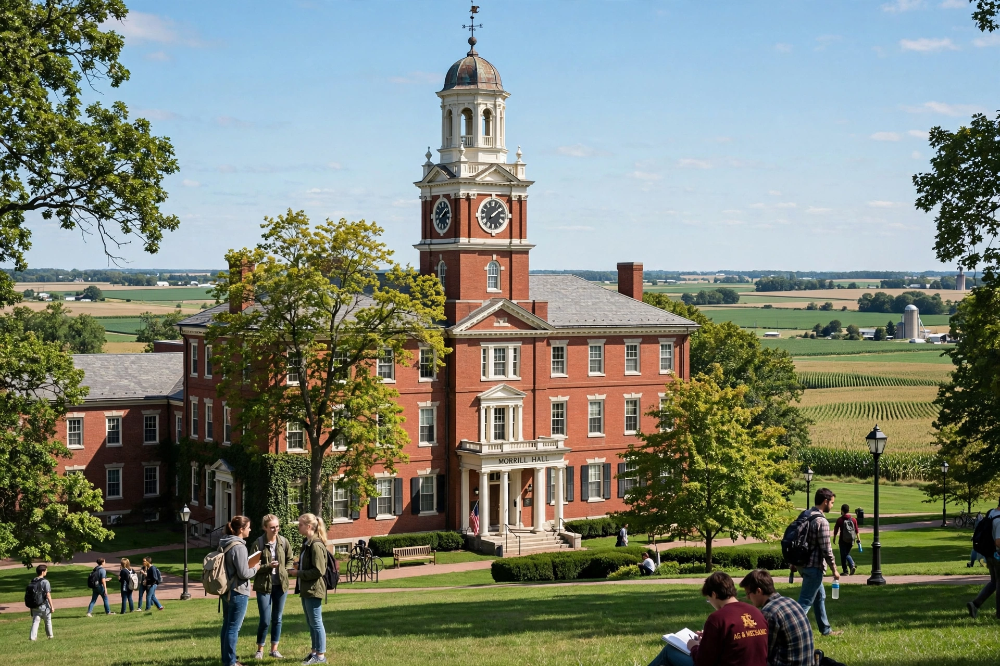

A land-grant university (or land-grant college) is an institution of higher education in the United States designated by a state to receive the benefits of the Morrill Acts of 1862 and 1890, which granted federal land to fund education in agriculture and the mechanic arts.

| Country | United States |
|---|---|
| Established by | Morrill Act of 1862 |
| Number | Over 100 institutions |
Championed by Vermont congressman Justin Smith Morrill, the 1862 Act gave each state 30,000 acres of federal land per member of Congress, the proceeds endowing colleges teaching agriculture, engineering and military tactics alongside classical studies. The 1890 Act required states either to admit students regardless of race or to establish separate institutions, creating the historically Black land-grant universities. Tribal colleges gained land-grant status in 1994.
Land-grants pursue a threefold mission of teaching, research and extension, extended by the Hatch Act (1887, agricultural experiment stations) and Smith-Lever Act (1914, cooperative extension). Examples include Cornell, Texas A&M, the University of California system schools, Ohio State and the University of Wisconsin–Madison.